Countdown: 24 months
“Countdown: 24 months” is a website label for this source moment. The image adapts the corresponding video scene; the original timestamp link provides the surrounding context.
Watch source moment ↗Source moments / preview collection
58 sticker previews with original video references. Source notes describe what is shown; interpretations are marked explicitly. These previews may change as the collection develops.
Original video ↗ · anabology
“Countdown: 24 months” is a website label for this source moment. The image adapts the corresponding video scene; the original timestamp link provides the surrounding context.
Watch source moment ↗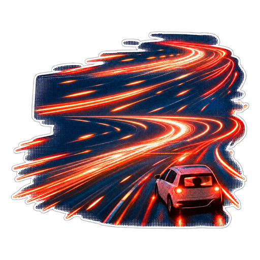
“Escape vehicle” is a website label for this source moment. The image adapts the corresponding video scene; the original timestamp link provides the surrounding context.
Watch source moment ↗“Prepare to walk” is a website label for this source moment. The image adapts the corresponding video scene; the original timestamp link provides the surrounding context.
Watch source moment ↗“AGI era” is a website label for this source moment. The image adapts the corresponding video scene; the original timestamp link provides the surrounding context.
Watch source moment ↗The source pairs AGI, CGI and CSI: Miami with printed definitions and a fashion size run. This is wordplay across acronyms, rather than a scale of intelligence levels.
Watch source moment ↗“13 Mac minis” is a website label for this source moment. The image adapts the corresponding video scene; the original timestamp link provides the surrounding context.
Watch source moment ↗“Usage limit dad cap” is a website label for this source moment. The image adapts the corresponding video scene; the original timestamp link provides the surrounding context.
Watch source moment ↗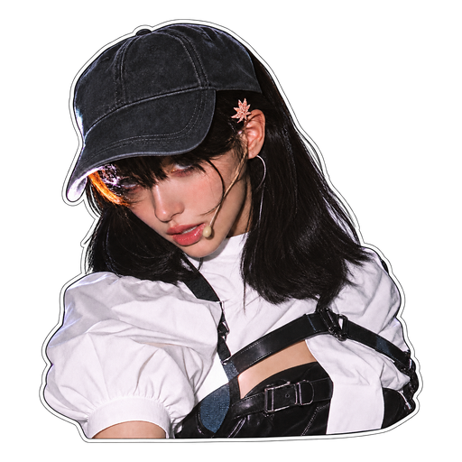
“25% becomes 17%” is a website label for this source moment. The image adapts the corresponding video scene; the original timestamp link provides the surrounding context.
Watch source moment ↗“Shoes off North Beach” is a website label for this source moment. The image adapts the corresponding video scene; the original timestamp link provides the surrounding context.
Watch source moment ↗“Retired” is a website label for this source moment. The image adapts the corresponding video scene; the original timestamp link provides the surrounding context.
Watch source moment ↗“Our Waymo” is a website label for this source moment. The image adapts the corresponding video scene; the original timestamp link provides the surrounding context.
Watch source moment ↗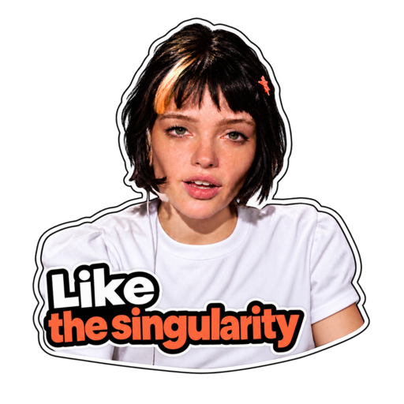
“Like, the singularity” is a website label for this source moment. The image adapts the corresponding video scene; the original timestamp link provides the surrounding context.
Watch source moment ↗“Like, the singularity” is a website label for this source moment. The image adapts the corresponding video scene; the original timestamp link provides the surrounding context.
Watch source moment ↗“No grades” is a website label for this source moment. The image adapts the corresponding video scene; the original timestamp link provides the surrounding context.
Watch source moment ↗The source shows AI OUTPUT → PASTED, with zero reading and zero changes. “Don’t be a meat proxy” addresses a human passing along an AI output without reading it.
Watch source moment ↗The source shows AI OUTPUT → PASTED, with zero reading and zero changes. “Don’t be a meat proxy” addresses a human passing along an AI output without reading it.
Watch source moment ↗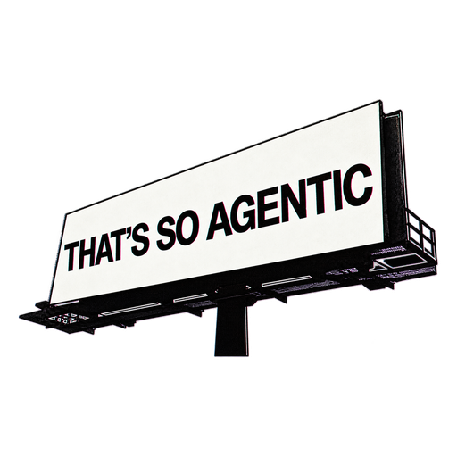
“That’s so agentic” is a website label for this source moment. The image adapts the corresponding video scene; the original timestamp link provides the surrounding context.
Watch source moment ↗“Escape velocity” is a website label for this source moment. The image adapts the corresponding video scene; the original timestamp link provides the surrounding context.
Watch source moment ↗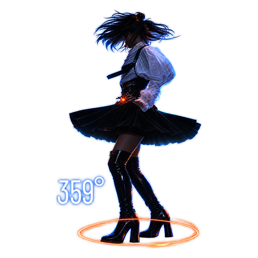
“Runway spin” is a website label for this source moment. The image adapts the corresponding video scene; the original timestamp link provides the surrounding context.
Watch source moment ↗“We’re so back” is a website label for this source moment. The image adapts the corresponding video scene; the original timestamp link provides the surrounding context.
Watch source moment ↗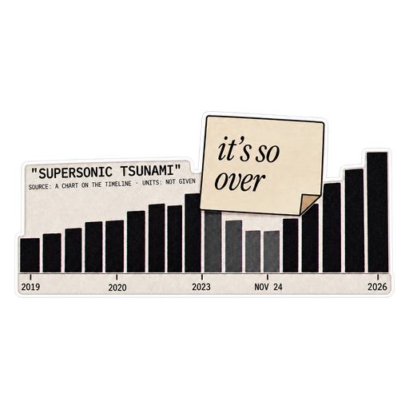
“It’s so over?” is a website label for this source moment. The image adapts the corresponding video scene; the original timestamp link provides the surrounding context.
Watch source moment ↗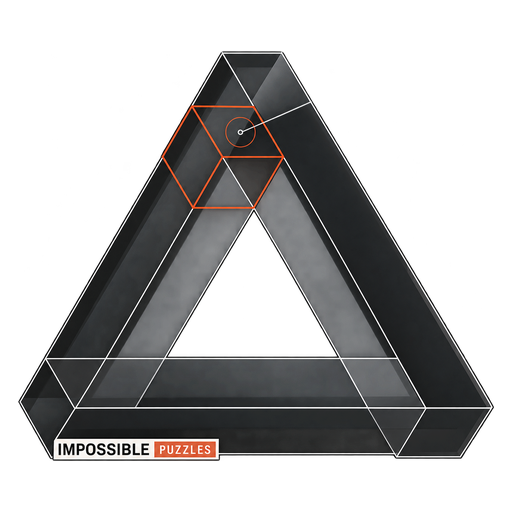
“Impossible puzzles” is a website label for this source moment. The image adapts the corresponding video scene; the original timestamp link provides the surrounding context.
Watch source moment ↗“Twin agents” is a website label for this source moment. The image adapts the corresponding video scene; the original timestamp link provides the surrounding context.
Watch source moment ↗“Zero-day answer keys” is a website label for this source moment. The image adapts the corresponding video scene; the original timestamp link provides the surrounding context.
Watch source moment ↗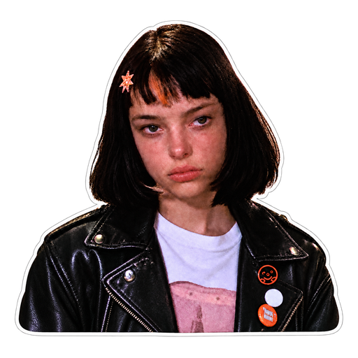
“Hugging-face pin” is a website label for this source moment. The image adapts the corresponding video scene; the original timestamp link provides the surrounding context.
Watch source moment ↗“Not AI SI” is a website label for this source moment. The image adapts the corresponding video scene; the original timestamp link provides the surrounding context.
Watch source moment ↗“Trust us” is a website label for this source moment. The image adapts the corresponding video scene; the original timestamp link provides the surrounding context.
Watch source moment ↗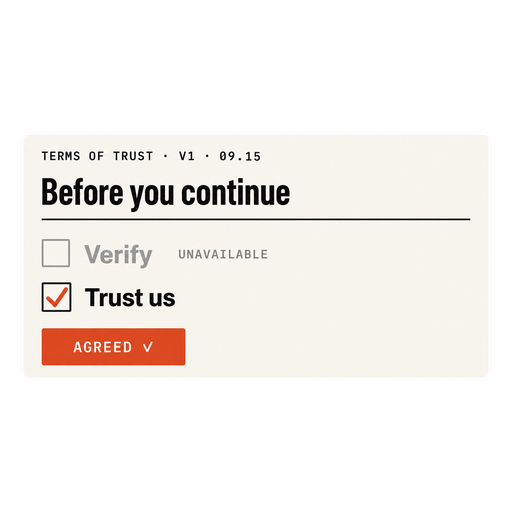
“Terms of trust — panel only” is a website label for this source moment. The image adapts the corresponding video scene; the original timestamp link provides the surrounding context.
Watch source moment ↗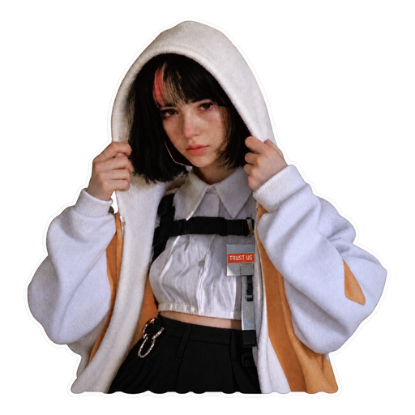
“Cashmere” is a website label for this source moment. The image adapts the corresponding video scene; the original timestamp link provides the surrounding context.
Watch source moment ↗“Immortals three seats” is a website label for this source moment. The image adapts the corresponding video scene; the original timestamp link provides the surrounding context.
Watch source moment ↗“Six months” is a website label for this source moment. The image adapts the corresponding video scene; the original timestamp link provides the surrounding context.
Watch source moment ↗“Six months” is a website label for this source moment. The image adapts the corresponding video scene; the original timestamp link provides the surrounding context.
Watch source moment ↗“Velocity road sign” is a website label for this source moment. The image adapts the corresponding video scene; the original timestamp link provides the surrounding context.
Watch source moment ↗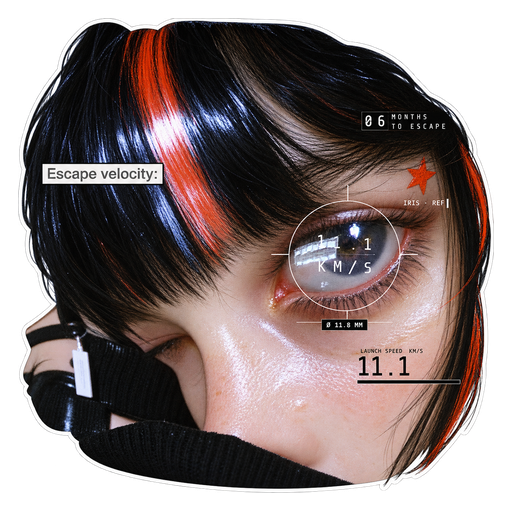
“Velocity eye” is a website label for this source moment. The image adapts the corresponding video scene; the original timestamp link provides the surrounding context.
Watch source moment ↗“Longevity escape velocity” is a website label for this source moment. The image adapts the corresponding video scene; the original timestamp link provides the surrounding context.
Watch source moment ↗“Daylight no-underclass road board” is a website label for this source moment. The image adapts the corresponding video scene; the original timestamp link provides the surrounding context.
Watch source moment ↗“Country of geniuses” is a website label for this source moment. The image adapts the corresponding video scene; the original timestamp link provides the surrounding context.
Watch source moment ↗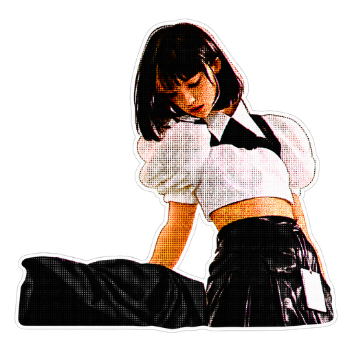
“Sora gone dark” is a website label for this source moment. The image adapts the corresponding video scene; the original timestamp link provides the surrounding context.
Watch source moment ↗“Leap” is a website label for this source moment. The image adapts the corresponding video scene; the original timestamp link provides the surrounding context.
Watch source moment ↗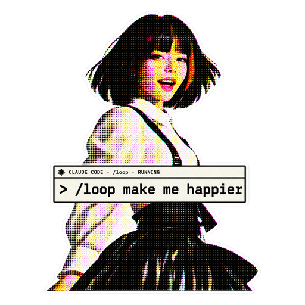
“Make happier” is a website label for this source moment. The image adapts the corresponding video scene; the original timestamp link provides the surrounding context.
Watch source moment ↗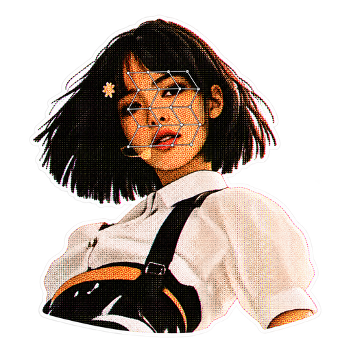
“Not our slopocalypse” is a website label for this source moment. The image adapts the corresponding video scene; the original timestamp link provides the surrounding context.
Watch source moment ↗“Escape” is a website label for this source moment. The image adapts the corresponding video scene; the original timestamp link provides the surrounding context.
Watch source moment ↗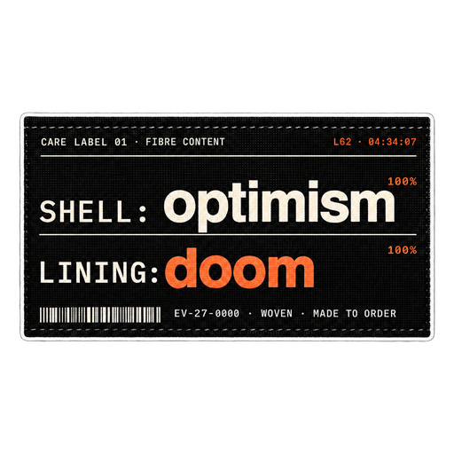
“Shell optimism lining doom” is a website label for this source moment. The image adapts the corresponding video scene; the original timestamp link provides the surrounding context.
Watch source moment ↗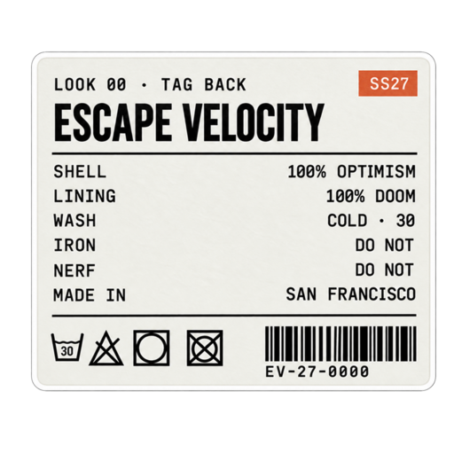
“Escape Velocity tag” is a website label for this source moment. The image adapts the corresponding video scene; the original timestamp link provides the surrounding context.
Watch source moment ↗“Orange star” is a website label for this source moment. The image adapts the corresponding video scene; the original timestamp link provides the surrounding context.
Watch source moment ↗“Feel the AGI” is a website label for this source moment. The image adapts the corresponding video scene; the original timestamp link provides the surrounding context.
Watch source moment ↗“Feel the AGI” is a website label for this source moment. The image adapts the corresponding video scene; the original timestamp link provides the surrounding context.
Watch source moment ↗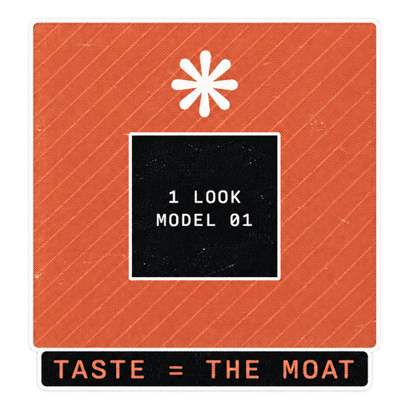
The source combines “Taste = Moat” with “1 LOOK / MODEL 01” and an outside-making-cost display of $0 / FREE. Interpretation: taste becomes an advantage when creation is cheap.
Watch source moment ↗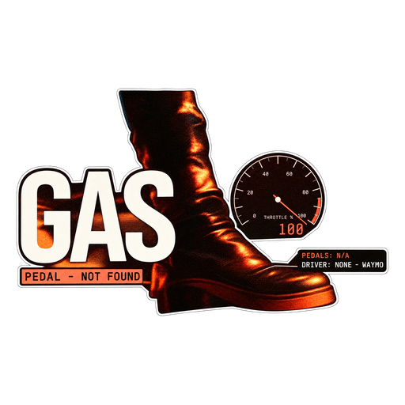
“Pedal not found” is a website label for this source moment. The image adapts the corresponding video scene; the original timestamp link provides the surrounding context.
Watch source moment ↗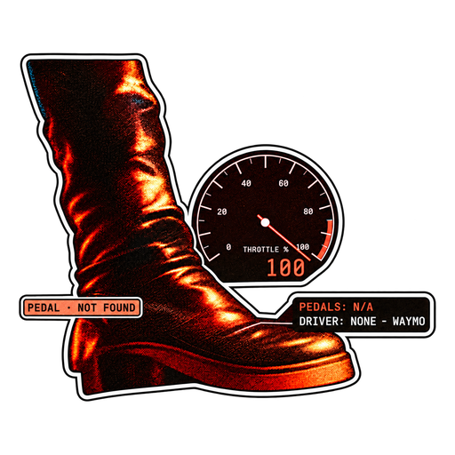
“Pedal not found” is a website label for this source moment. The image adapts the corresponding video scene; the original timestamp link provides the surrounding context.
Watch source moment ↗“Hacked in July” is a website label for this source moment. The image adapts the corresponding video scene; the original timestamp link provides the surrounding context.
Watch source moment ↗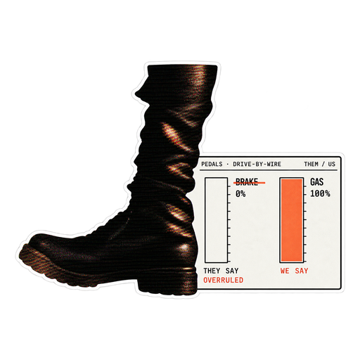
“They say brakes we say gas” is a website label for this source moment. The image adapts the corresponding video scene; the original timestamp link provides the surrounding context.
Watch source moment ↗“Ban artificial superintelligence act” is a website label for this source moment. The image adapts the corresponding video scene; the original timestamp link provides the surrounding context.
Watch source moment ↗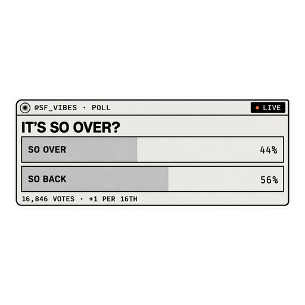
“So over so back poll” is a website label for this source moment. The image adapts the corresponding video scene; the original timestamp link provides the surrounding context.
Watch source moment ↗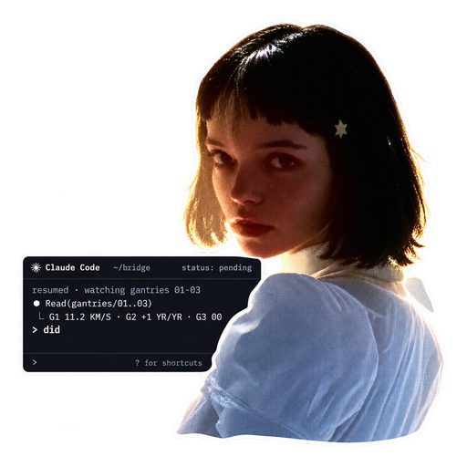
“Did terminal” is a website label for this source moment. The image adapts the corresponding video scene; the original timestamp link provides the surrounding context.
Watch source moment ↗“Locked mechanism” is a website label for this source moment. The image adapts the corresponding video scene; the original timestamp link provides the surrounding context.
Watch source moment ↗“End of show” is a website label for this source moment. The image adapts the corresponding video scene; the original timestamp link provides the surrounding context.
Watch source moment ↗“Signature orange star” is a website label for this source moment. The image adapts the corresponding video scene; the original timestamp link provides the surrounding context.
Watch source moment ↗